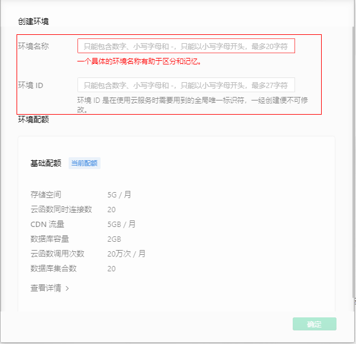
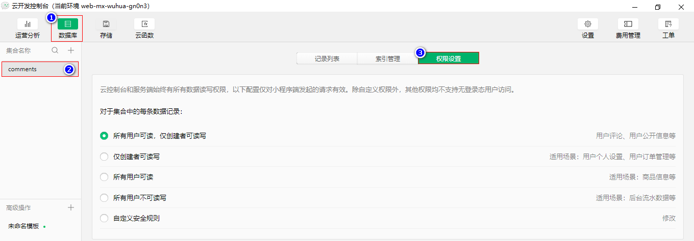

微信小程序 -- Unit06
1.微信小程序云开发
1.1 概述
微信小程序云开发包含的服务类型有：
- 云存储，类似于网盘，可以存储任意类型的文件，如图像，音频、视频等。
- 云数据库，是一个专门为微信小程序提供的
JSON类型的数据库。 - 云函数，实现更为复杂的服务器扩展功能。
1.2 开通云服务
A.单击工具栏中的"云开发"按钮
B.在弹出的对话框中输入云环境名称及ID

每个微信小程序只能开通两个云服务
每个微信小程序只能使用与自己关联的云服务
微信小程序的云服务的前缀为
cloud://
2.云存储
云存储内的文件可以通过以下两种方式进行管理：
A.云开发控制台
B.通过API 实现
2.1 云开发控制台管理文件
通过云开发控制台的图形化管理界面实现即可。
2.2 通过API 实现
· wx.chooseImage()方法
wx.chooseImage()方法用于从本地相册选择图片或使用相机拍照，其语法结构是：
xxxxxxxxxxwx.chooseImage({ count:最多选择的图片数量(最多为9张), sourceType:"图片源类型['album', 'camera']", success:res=>{ //成功时的回调函数 }, fail:()=>{ //失败时的回调函数 }, complete:()=>{ //完成时的回调函数 }});
success回调函数中返回选择的图片文件信息，包括：
tempFiles，数组对象，形如：xxxxxxxxxx[{//临时文件的路径及名称path: "wxfile://tmp_904bf3e59d5dba95eb67180980f5551f.jpg",//图像文件的字节数size:88369},{path: "wxfile://tmp_904bf3e59d5dba95eb67180980f5551f.jpg",size:88369}]
tempFilePaths，包含了选择的图片文件的路径，数组类型
· wx.chooseVideo()方法
wx.chooseVideo()方法用于拍摄视频或从手机相册中选视频，语法结构是：
· wx.chooseMedia()方法
wx.chooseMedia()方法用于拍摄或从手机相册中选择图片或视频，语法结构是：
· wx.uploadFile()方法
· wx.cloud.uploadFile()方法
wx.cloud.uploadFile()将文件上传到云存储空间内，其语法结构是：
xxxxxxxxxxwx.cloud.uplOadFile({ filePath:"上传文件的路径" cloudPath:"云存储路径" success:res=>{ //成功时的回调函数 }})
success回调函数将返回上传文件的fileID
3.云数据库
3.1 概述
云数据库是微信小程序提供的JSON类型数据库。
JSON数据类型的数据库是基于MongoDB -- 非关系型数据库(NoSQL -- Not Only SQL)
3.2 关系型数据库与非关系型数据库的区别
| 关系型 | 非关系型 | |
|---|---|---|
| 数据类型 | 整型、浮点型、定点型、字符型等 | 字符型、数值型、数组、对象等 |
| 核心概念 | 数据库(Database)->数据表(Table)->列(Column)->行(Row) | 数据库(Database)->集合(Collection)->字段(field)->记 录(Record)/文档(Document) |
| 操作命令 | 统一使用SQL命令，存在差别SQL Server=>T-SQLOracle=>PL/SQL | 不尽相同 |
| 关系的维护 | 通过外键来维护 | 不存在关系的概念 |
| 记录的结构 | id username fId 1 Tom 52 Rose 9 | { id:5, username:"Rose" firend:{ username:"Frank" sex:true } } |
3.3 云数据库的使用
云数据库的使用可通过以下两种方式实现：
A.通过云开发控制台的图形化管理界面
B.通过云数据库的API实现
3.4 通过云开发控制台管理
A.创建集合

B.根据需要添加记录

C.设置集合的访问权限

3.5 通过云数据库的API实现
· wx.cloud.database()方法
wx.cloud.database()方法用于实现数据库的连接，其语法结构是：
x
Database wx.cloud.database()该方法返回数据库对象
· Database对象
· collection()方法
collection()方法用于返回对指定集合的引用，其语法结构是：
x
Collection Database对象.collection('集合名称')· command 属性
command属性用于返回数据库运算符对象，其语法结构是:
x
Command Database对象.command· Collection对象
· add()方法
add()方法用于插入记录，其语法结构是：
Collection对象.add({data:{.}})
_id字段是由微信小程序生成的保证记录唯一性的id
_openid字段用于标识记录的所有者
· field()方法
field()方法用于指定查询的字段，其语法结构是：
xxxxxxxxxxCollection Collection对象.field({key:true|false})示例代码如下：
x
collect.field({ username:true, age:true, _id:false, "friends.username":true }).get({ success:res=>{ console.log(res); }});· where()方法
where()方法用于指定查询的条件，其语法结构是：
x
Collection Collection对象.where({ 字段名称:数据库运算符对象})· orderBy()方法
orderBy()方法用于对数据进行排序，其语法结构是：
Collection Collection对象.orderBy(field,'asc|desc')
asc为升序，desc为降序如果需要对嵌套字段排序，需要用 "点表示法" 连接嵌套字段，比如
style.color表示字段style里的嵌套字段color。
· skip()方法
skip()方法用于指定从第几条记录开始返回，其语法结构是：
Collection Collection对象.skip(数字)记录的编号从
0开始
· limit()方法
limit()方法用于指定返回几条记录，其语法结构是：
Collection Collection对象.limit(数字)· get()方法
get()方法用于获取集合数据，其语法结构是：
xCollection对象.get({success:res=>{},fail:()=>{}})或者Collection对象.get().then(res=>{}).catch(err=>{})